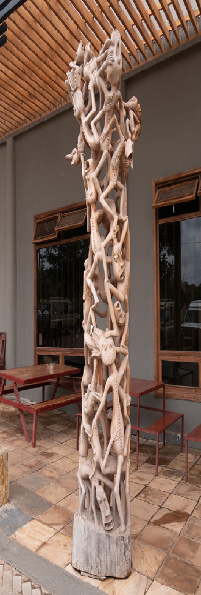

Exercise: 5.6
There are several Makonde styles and each style has a specific characteristic. Describe the features of binadamu style.
Ujamaa style
The style was introduced by Robert Yakobo Sangwani in the 1950s. The style is characterised by a central figure, surrounded by other figures supporting each other and performing various activities. Traditionally, the sculpture was created with clusters of wrestlers carrying the winner on their shoulders. The Kiswahili term ujamaa came from a political enthusiast who was impressed by clusters of human figures with the impression of togetherness; a feature which symbolises the ujamaa ideology of Tanzania since 1967. However, today, some artists present the sculpture with a female figure on top and refer it to a family tree. Figure 5.10 shows the Ujamaa-style sculpture.
